Look Like
An identity with a distinct character.
SCROLL TO EXPLORE ↓
Making language learning engaging through design and play.
An English-learning mobile experience combining mnemonic rules, an approachable visual identity and playful interaction.
- Project
- Look Like
- Role / disciplines
- Art direction / Mobile experience
- Period
- 2023
The learning experience needed a personality.
Translating physical flashcards into a digital product with playful interaction.
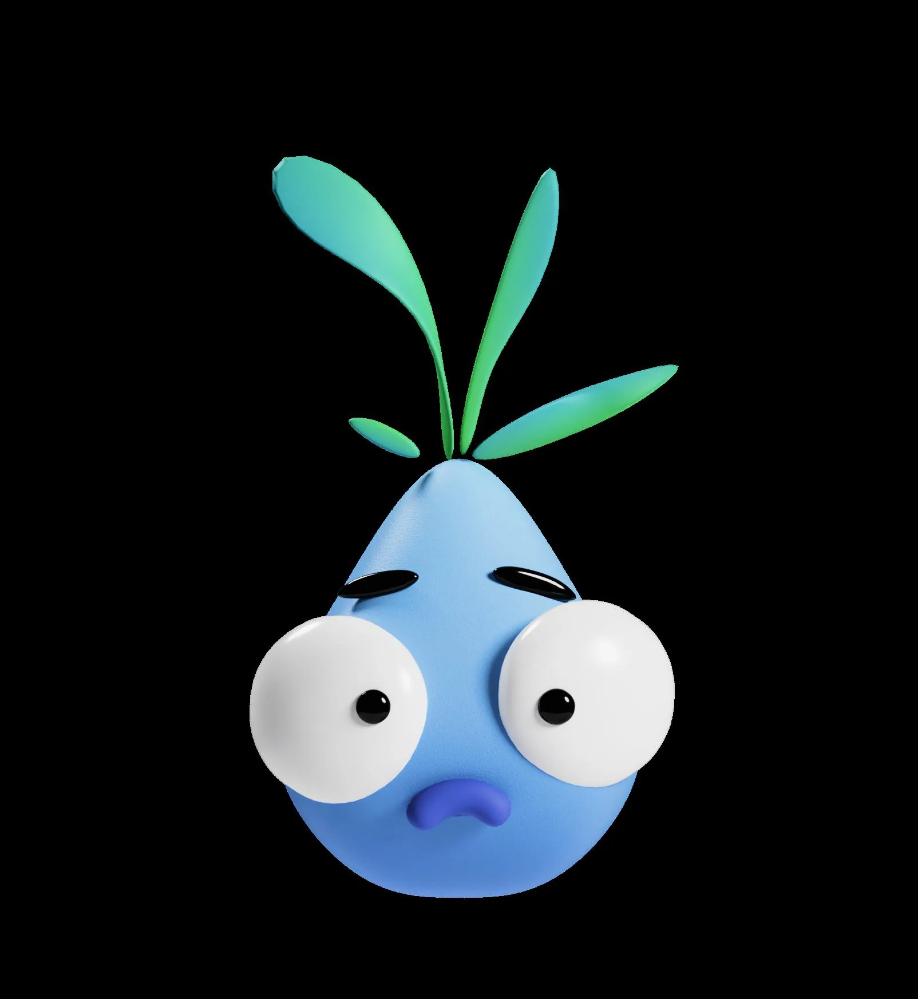
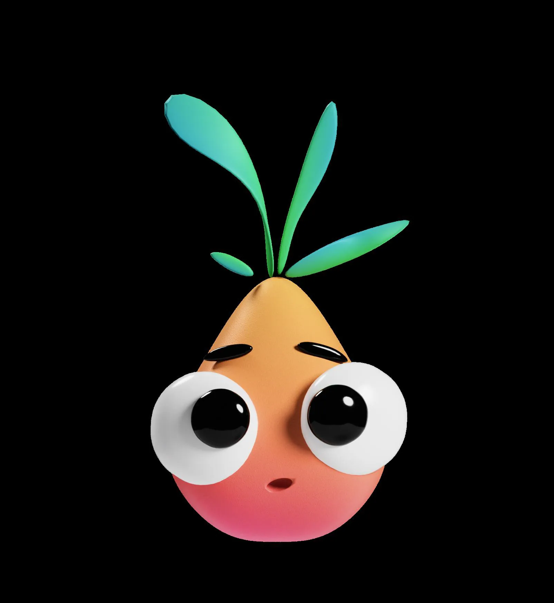
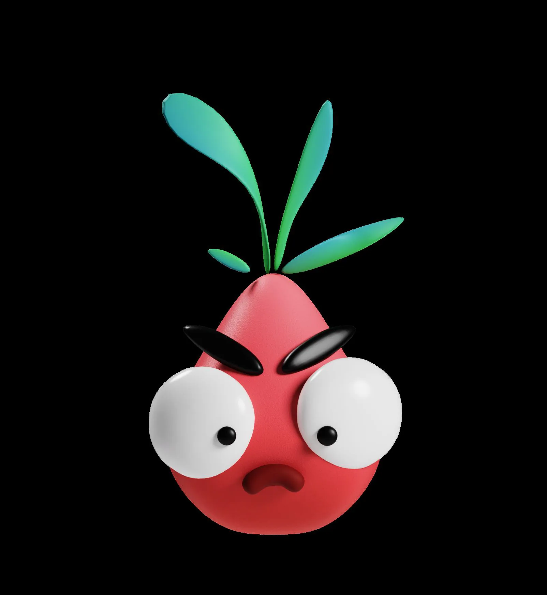
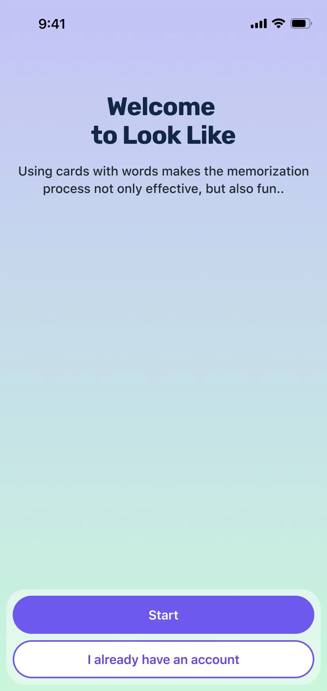
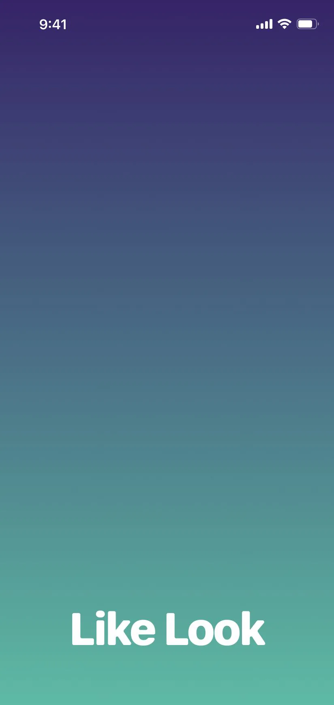
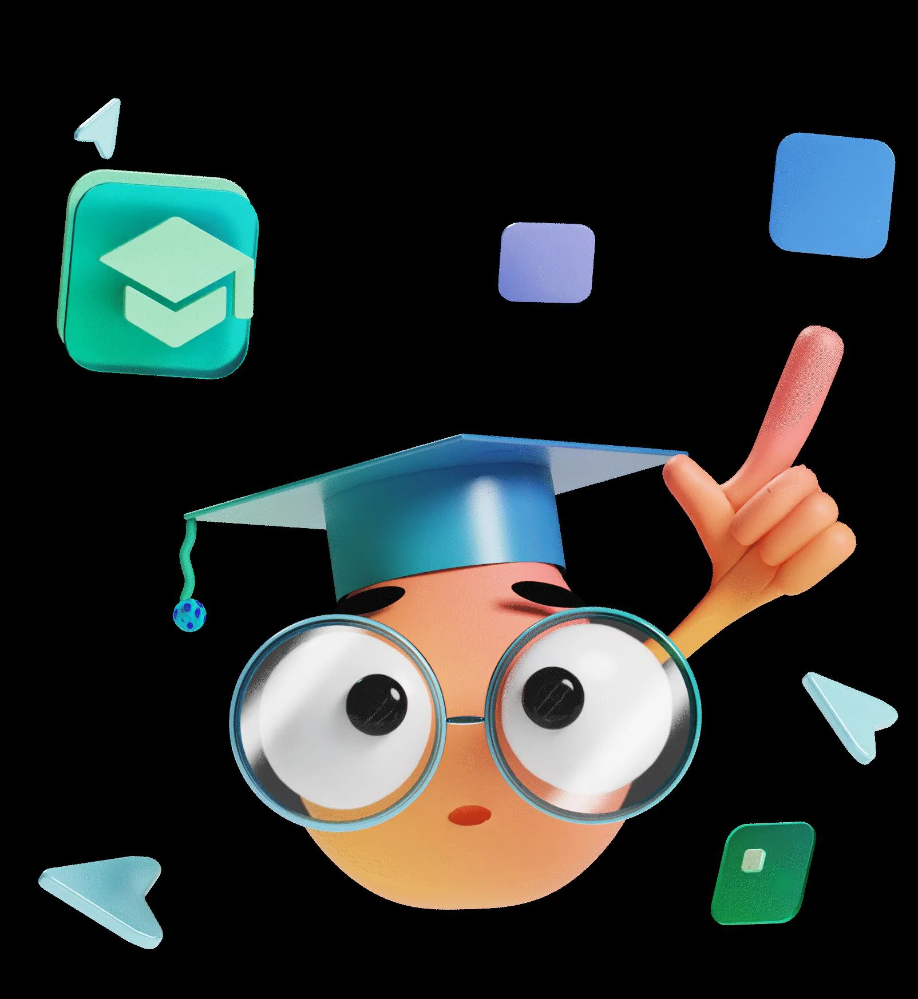
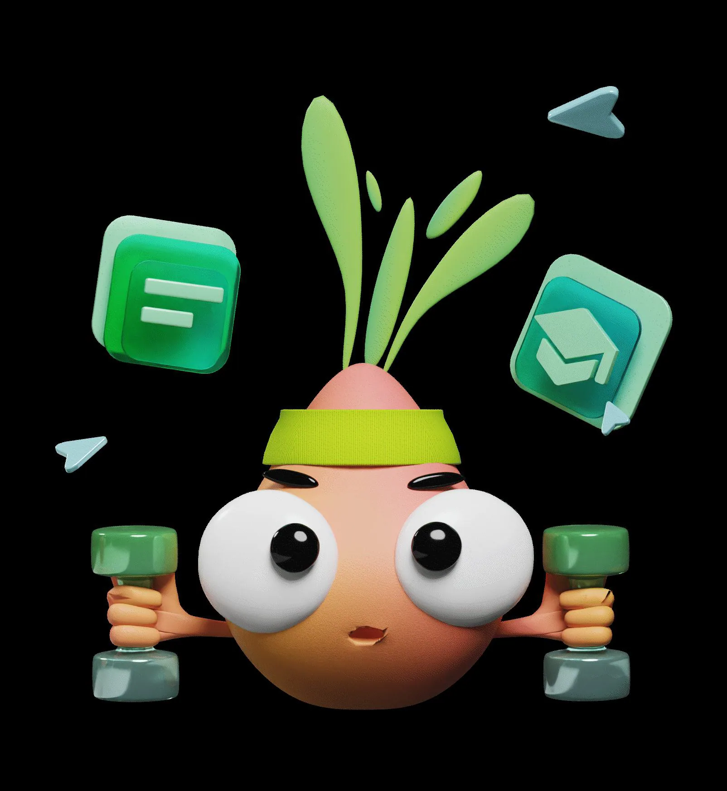
We engaged in an extensive discussion about the mechanics of language learning, focusing on how to translate the tangible experience of using physical flashcards into the digital space. To achieve this, I developed prototypes for usability testing, allowing us to assess the effectiveness of our proposed mechanics with real users.
I started by gathering requirements and drafting a design brief, discussing the brand and understanding the principles of learning through mnemonic rules.
Additionally, I designed the Onion-[kuk] mascot, which played a crucial role in adding emotional engagement, gamification, and motivation to the app. This mascot was also integral to our brand identity, serving as a central figure in user communication across onboarding, training, storytelling, and marketing initiatives.
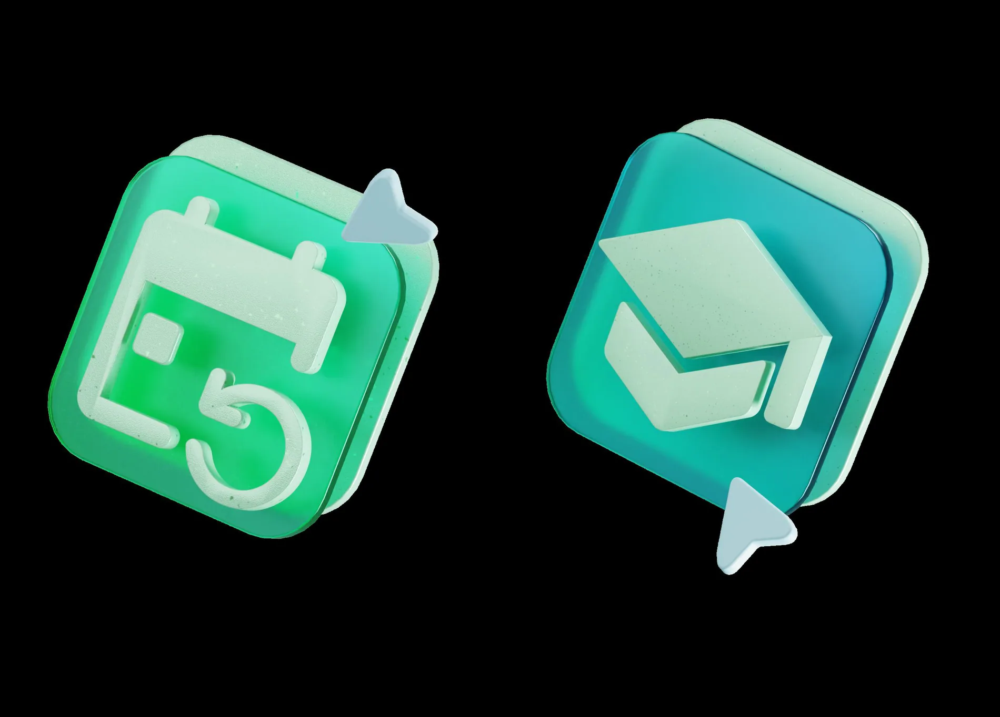
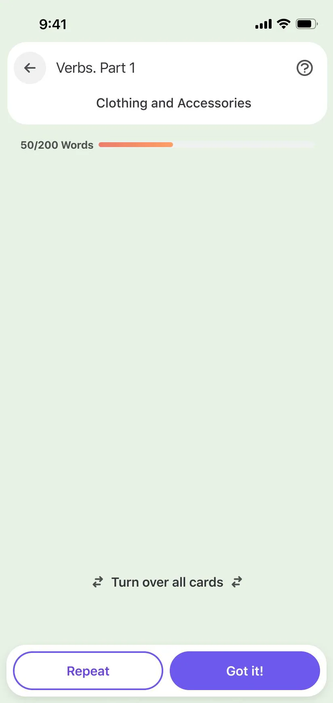
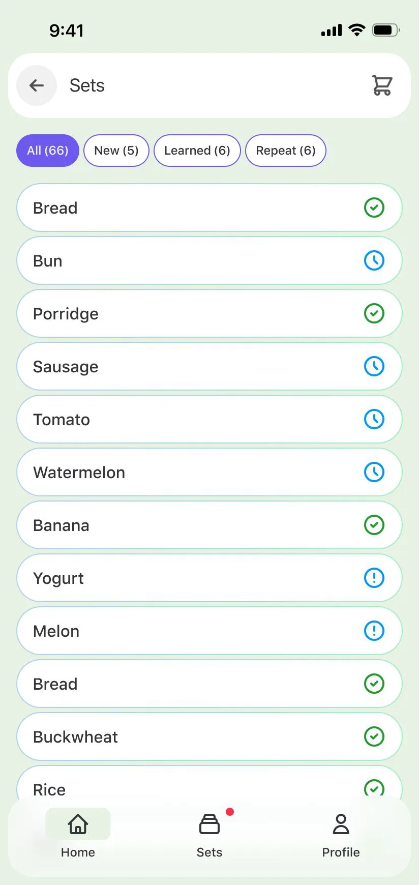
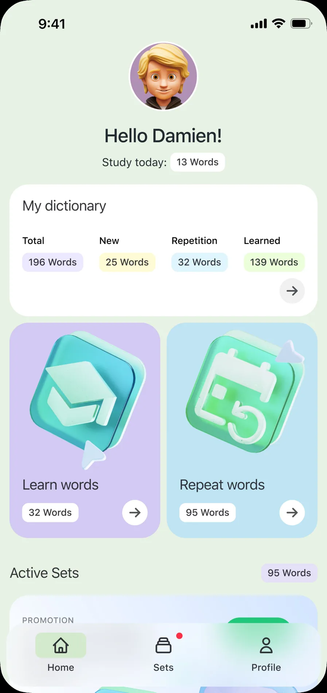
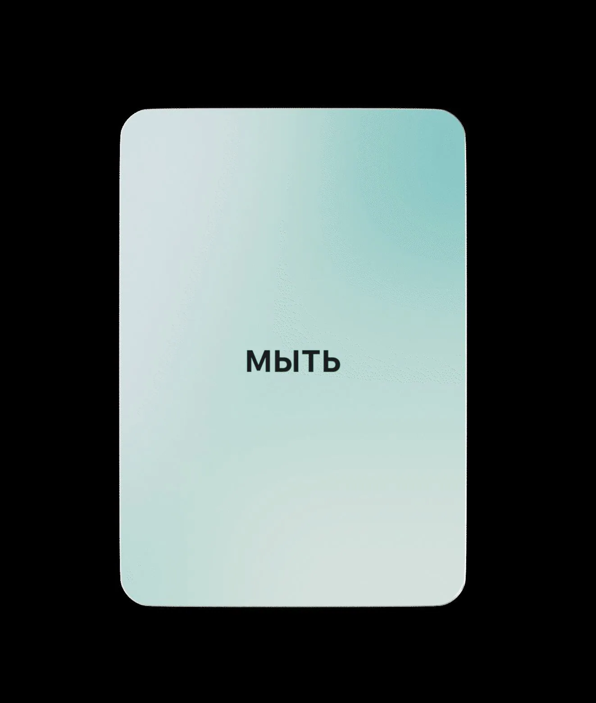